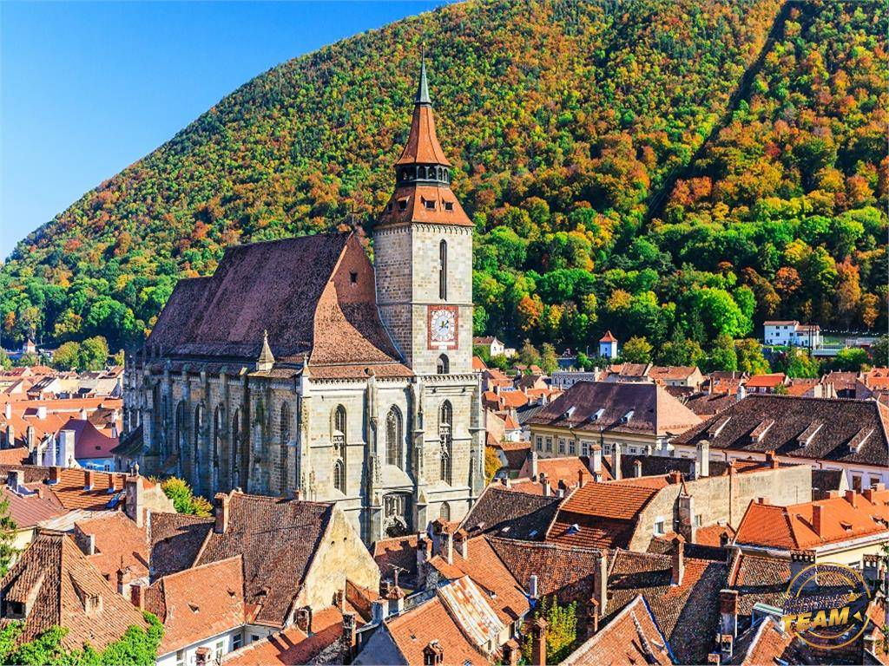

Like Erol Ozan said Some beautiful paths can’t be discovered without getting lost
,so, let's take a look at their opinions about the city.
- Frank & Lissette from Canada said on thir blog bbqboy.net
- It’s taken us a bit of time to put our feelings together about Brasov. It’s definitely a very pretty place and worth a visit. But as ‘slow travellers’ who will have been here a month by the time we leave, how do we feel about Brasov?
- Most people who follow our blog know that we are slow travellers, staying a month or even two somewhere. We’re working as we travel so we rent an apartment and do most of the things locals would: groceries, laundry, shopping, cooking, going to restaurants and bars, and trying to participate in local activities. We even join gyms, as we have in Brasov. So we live in a place and get to know it as well as I think any traveller can in a few weeks to a month (or two).
I’ve seen a few posts out there from other bloggers who’ve visited Brasov and who write about possibly living here. They’ll tell you that it’s pretty, the temperatures are temperate, the food is delicious, and you can get an apartment for a “few hundred dollars a month”.
- An anonymus person said:
- Brasov’s old centre is the best place to start your exploration of the city. A gathering spot since 1364, the square hosts all important events taking place in the city, such as concerts and fairs. The colourful buildings that surround it host terraces and restaurants and the Council House, one of the most important landmarks, dates from the 15th century.The most stunning example of medieval architecture is Catherine’s Gate, the access gate to the medieval city. Its five spires warns visitors that the death penalty could be applied in the city for crimes. Built in the 16th century, it was used by native Romanians to enter the city, ruled by German Saxons.
- Brasov has a lively restaurant scene, offering from delicious traditional food, served at Ceasu’ Rau or Sergiana, to food grown locally served by Bistro de l’Arte in menus that adapt to the seasons, as well as several foreign cuisine restaurants. For a one day trip, head one hour away from Brasov to Piatra Craiului Mountains, for hiking, the freshest air and pristine nature. History and culture lovers will appreciate a visit to Prejmer fortified church, a World Heritage Site located 15 kilometres away from the city. Not least, animal lovers will enjoy a visit to the Libearty Bear Sanctuary, a welcoming home to 70 rescued bears.
